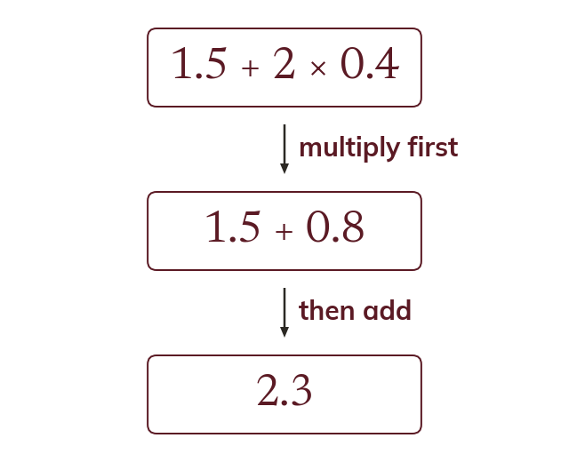

The same order
Decimals follow the same order of operations as integers. So
The order of operations applies to decimals exactly as it does to integers: brackets, indices, then multiplication and division, then addition and subtraction. So